#Breizhjug #gradle @CedricChampeau

Cédric Champeau (@CedricChampeau) - Gradle Inc.
speaker {
name 'Cédric Champeau'
company 'Gradle Inc'
oss 'Apache Groovy committer',
successes 'Static type checker',
'Static compilation',
'Traits',
'Markup template engine',
'DSLs'
failures Stream.of(bugs),
twitter '@CedricChampeau',
github 'melix',
extraDescription '''Groovy in Action 2 co-author
Misc OSS contribs'''
}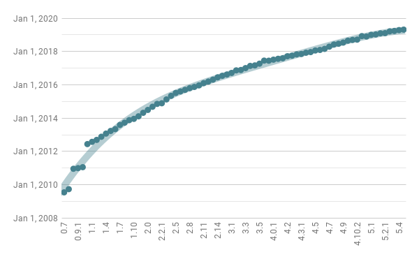
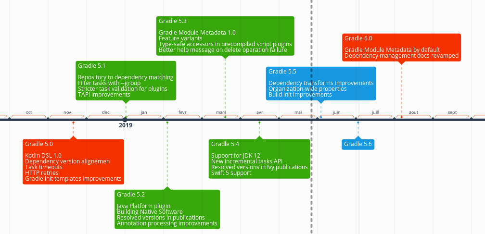
Auto-completion and content assist
Quick documentation
Navigation to source
Refactoring and more
Already using Gradle 5.0+?
Using plugins {} (not buildscript {})?
Does your IDE support Kotlin DSL scripts?
Familiar with basic Kotlin syntax?
Do you know your migration strategy?
Yes to all → all aboard the Kotlin train
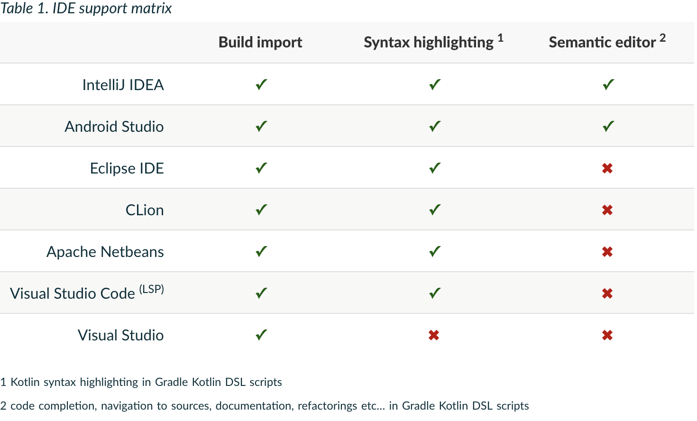
It’s waaaaaaay better in 5.0
Feedback welcome: https://github.com/gradle/kotlin-dsl/issues
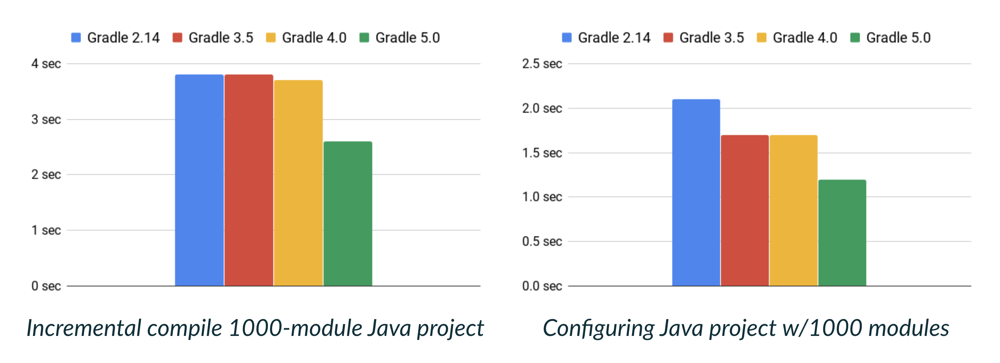
Analyze class dependencies to optimize which classes are recompiled
Fast in-memory cache of class ABIs inside daemon
Do not mix sources in a single source set!
Update to latest version of Dagger, Lombok, and other annotation processors!
Combine independent Gradle builds
Substitute binary with project dependencies
Quick local experimentation
Cross-repository refactoring
Smooth migration from monolith to multi-repo
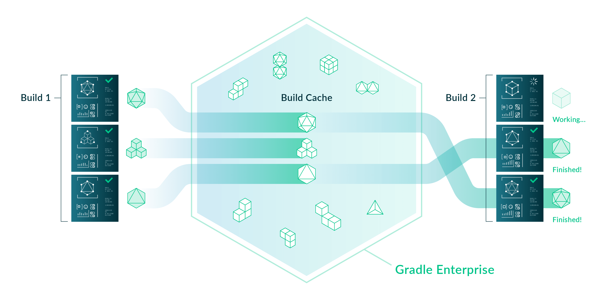
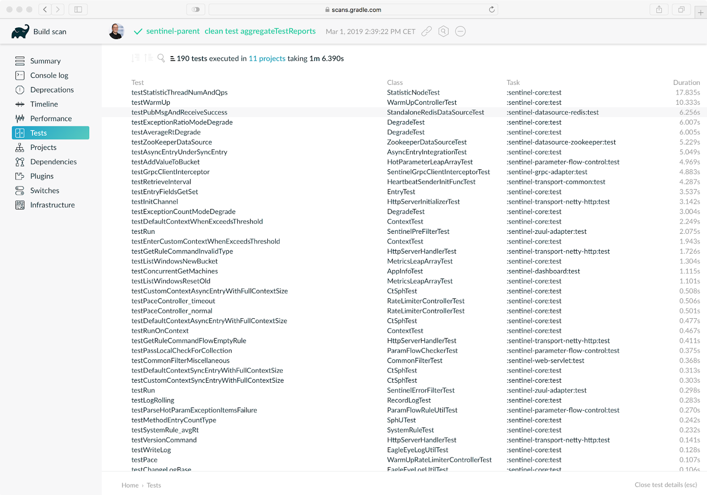
Task timeouts API
Provider APIs (Lazy properties)
Configuration Avoidance APIs
Custom POM/Ivy module DSLs
Custom CLI flags for tasks
Worker APIs (Parallel task execution)
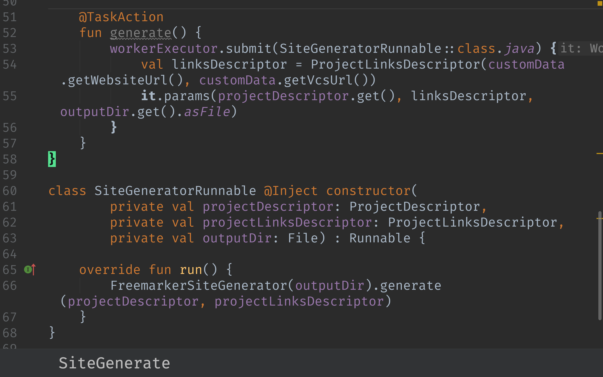
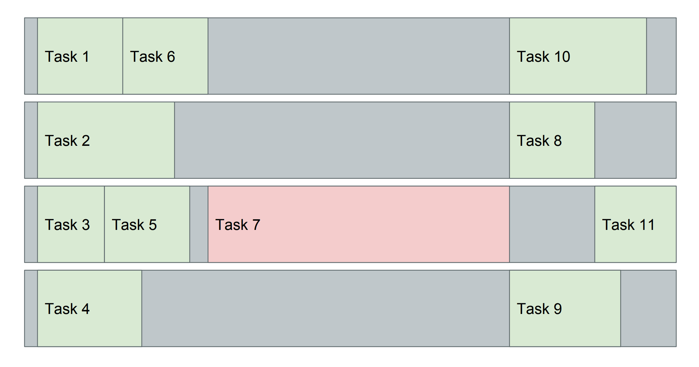
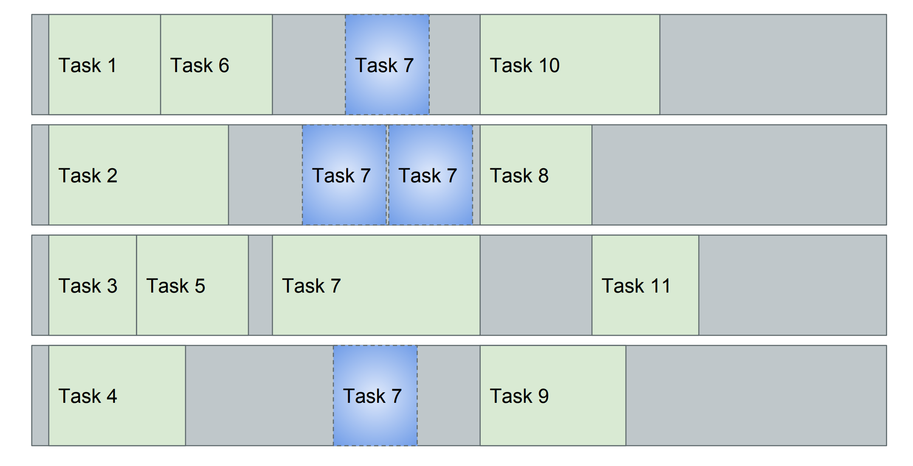
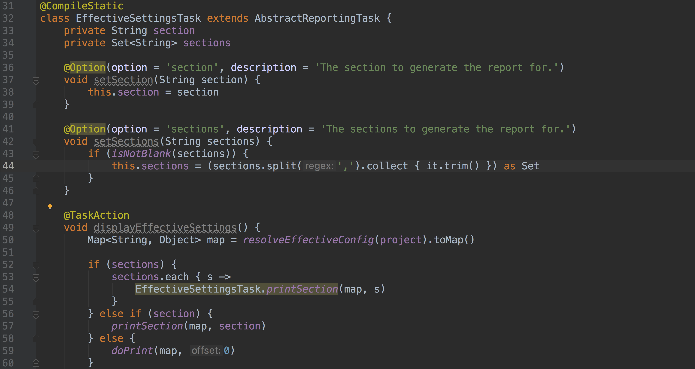
Filter tasks by group, e.g, :`tasks —group=Build`
gradle init has additional project bootstrapping templates
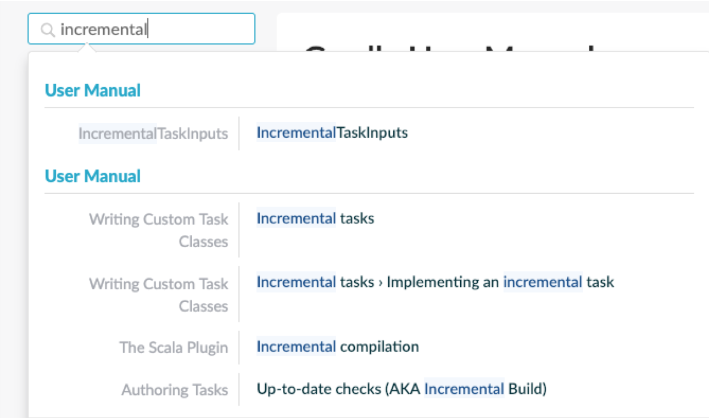
Faster than spring-dependency-management
dependencies {
implementation(platform("org.springframework.boot:spring-boot-dependencies:2.1.4.RELEASE"))
implementation("org.codehaus.groovy:groovy")
}Try to make sense of what a version number means
Give reasons for a dependency
dependencies {
implementation("org.codehaus.groovy:groovy:2.4.7") {
because("Needed for dynamic script evaluation at runtime")
}
}This is the default, gracefully upgrades in case of conflict
dependencies {
implementation("org.codehaus.groovy:groovy") {
version {
require "2.4.11"
}
}
}Fails if anyone else disagrees
dependencies {
implementation("org.codehaus.groovy:groovy") {
version {
strictly "2.4.11"
}
}
}This is the weakest, chosen if anyone else doesn’t have a better idea
Allows downgrades
dependencies {
implementation("org.codehaus.groovy:groovy") {
version {
require "[2.4.0, 3.0["
prefer "2.4.11"
}
}
}Allows rejecting some versions
dependencies {
implementation("org.codehaus.groovy:groovy") {
version {
require "[2.4.0, 3.0["
prefer "2.4.11"
reject "2.4.10"
}
}
}A platform can be used for different purposes:
a description of modules which are published together (and for example, share the same version)
a set of recommended versions for heterogeneous libraries. A typical example includes the Spring Boot BOM
sharing a set of dependency versions between subprojects
plugins {
id 'java-platform'
}
dependencies {
constraints {
// Platform declares some versions of libraries used in subprojects
api 'commons-httpclient:commons-httpclient:3.1'
api 'org.apache.commons:commons-lang3:3.8.1'
}
}dependencies {
// get recommended versions from the platform project
api platform(project(':platform'))
// no version required
api 'commons-httpclient:commons-httpclient'
}repositories {
maven {
url "https://repo.mycompany.com"
content {
includeGroupByRegex "com\\.mycompany.*"
}
}
}e.g "align all Jackson modules to the same version"
Makes dynamic versions (latest, 1.+, [1.0, 2.0)) usable (safely reproducible)
Locks all dynamic versions
Fails the build if a version is not expected
#Breizhjug #gradle @CedricChampeau